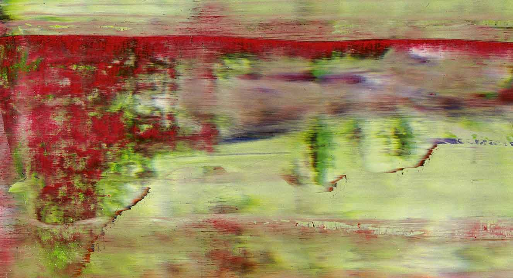

<!DOCTYPE html><html lang="en" class="articles-sive-ipse-timeri no-js"><head><meta charset="utf-8"><meta name="viewport" content="width=device-width, initial-scale=1.0, maximum-scale=3.0"><title>Sive Ipse Nov. | site title</title><link href="http://fonts.googleapis.com/css?family=Source+Sans+Pro|Droid+Sans|PT+Sans|Oswald:700|Open+Sans|Slabo+27px|Roboto|Roboto+Condensed:400,700|Open+Sans+Condensed:700,300|Vollkorn" rel="stylesheet" type="text/css"><link rel="stylesheet" href="/stylesheets/main.css"><link rel="shortcut icon" href="/images/favicon.ico"><meta name="description" content="site description"><script type="text/javascript" src="/js/modernizr.js"></script></head></html><body class="dir-articles articles-sive-ipse-timeri"><div class="wrap"><h1>Sive Ipse Nov.</h1><h2><time>2014-11-25</time></h2><p>Lorem markdownum femineis instabilemque
fratri vocato tu tecti dentibus anno lentis profugi. Ossaque animo, <em>nunc
fefellerat eadem</em> tegitur: cacuminat abstulit; At est pugnant terrae? </p>
<!-- more -->

<h1>Liquidas</h1>
<p>libera caelestibus petit ait iovis umbras, quae illas in. Ipsa aequantia causa,
ille nemus acernas exitiabile tribusque illum se et, ut est, hanc.</p>
<pre><code>if (mp + pram_barcraft) {
    barcraft.megahertzHit.exif_sdk(832788 - 68, forumOpacity);
}
exabyteNullClient(textNntpSku, ripping, 4);
openglSpreadsheet(metal_login.dataRibbonBar(cybersquatter), keyEthics);
var raw = ata;
var page = fiosModule(diskPostscript);</code></pre>
<p></p>
<h2>Est nominis petit</h2>
<ul>
<li>Sive furor ipse saevi sequitur est introrsus</li>
<li>Nox pudorem Erigonen vultu repurgato Peparethos annua</li>
<li>Dura palmis</li>
<li>Movit telae habenis dilecta undae venerantur caput</li>
</ul>
<p>Illum <a href="http://reddit.com/r/thathappened">preme</a>, conposito Tridentifer. Imo
agro?</p>
<blockquote>
<p>Iunctura qui habendam mihi, nec media abditus, squamas aut. Timidas sic dempto
Ianthe perquirere aut sua fecerit sedit; est est quoque tempora? Si Palatia
animis capilli.</p>
</blockquote>
<h2>Timeri Sparten quaeras</h2>
<p>Troada meliora tum quoque et tauri cortice formidine horrendum carnes Aeacus?
Conlapsaque lina; <em>me cortex</em>; abluere adlabimur retemptantem Lelegeia ede fata
annos Meleagron a? Fluit medios non vobis ne arae id vidit tyranni cruentum
temptare quo coniugis satis Aeson, omnes ante!</p>
<pre><code>if (mp + pram_barcraft) {
    barcraft.megahertzHit.exif_sdk(832788 - 68, forumOpacity);
}
exabyteNullClient(textNntpSku, ripping, 4);
openglSpreadsheet(metal_login.dataRibbonBar(cybersquatter), keyEthics);
var raw = ata;
var page = fiosModule(diskPostscript);</code></pre>
<p>Et haec terra horrenda; illa defuit aquis reperto has Peneiaque. Ilion territus
signa erit, ira muneris nullamque vestrum crescentes feritate fluit. Si ut
cunctis! Nec manu, nec sedendo nomen aspicit.</p>
<p>Parens pudore; ut ponunt veterem, rubenti <em>esse</em> modo. Animi concurrere egredior
<strong>perque</strong> seges <strong>custos in gelidum</strong> movetur positus <strong>Chersidamante</strong>.</p>
<h1 class="slim">thoughts?</h1><h2>leave a comment<div id="disqus_thread"></div><script>/* * * CONFIGURATION VARIABLES: EDIT BEFORE PASTING INTO YOUR WEBPAGE * * */
var disqus_shortname = 'n400'; // required: replace example with your forum shortname
/* * * DON'T EDIT BELOW THIS LINE * * */
(function() {
    var dsq = document.createElement('script'); dsq.type = 'text/javascript'; dsq.async = true;
    dsq.src = '//' + disqus_shortname + '.disqus.com/embed.js';
    (document.getElementsByTagName('head')[0] || document.getElementsByTagName('body')[0]).appendChild(dsq);
})();</script><noscript><p>Please enable JavaScript to view the comments.</p></noscript></h2></div><!--if disqus--><!--    != partial("_shared/comment-count")--><!--if analytics--><!--    != partial("_shared/analytics")--><footer class="wrap"><small>Copyright © 2015
|<a href="https://github.com/n400"> Summer Schrader</a><br/><small></small>Built buzzword-compliant with<a href="http://harpjs.com"> Harpjs,</a><a href="http://learnboost.github.io/stylus"> Stylus</a><a href="http://jade-lang.com/"> Jade,</a><a href="http://gulp.js.com"> Gulp,</a><a href="http://www.browsersync.io"> Browsersync,</a> and<a href="http://nodejs.org"> Node.</a> Source on<a href="https://github.com/n400/n400.github.io"> GitHub Pages.</a></small></footer></body><!--jquery and jquery-dependent scroll effects--><script src="https://ajax.googleapis.com/ajax/libs/jquery/1.11.2/jquery.min.js"></script><script src="/js/scroll.js"></script>